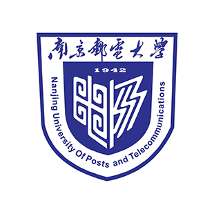

南京邮电大学 iOS 俱乐部，是一个由计算机学院、软件学院、网络空间安全学院和武汉大学大学生创新创业实践中心指导的学生团体，旨在指导社团成员进行 iOS 平台的软件开发。在学校、学院、Apple 公司和学生社团的帮助下，提供专业的指导，使学生创造性的想法得以尽情发挥。 南京邮电大学 iOS 俱乐部将以技术学习和研讨为主，定期举办专业的技术指导课，邀请技术大咖们进行日常编程课程的宣讲，也会邀请 Apple 公司的专业技术人员教授如何开发苹果 App。 我们位于学科楼的固定研发室将常年对俱乐部成员开放，成员可以进行定期或不定期的交流研讨。除了苹果公司的技术指导课外，俱乐部还将定期举办多种多样的培训课程，届时将邀请各大牛们教授成员如何写文案、如何做宣传、如何做设计和如何掌握核心技术。成员可以根据自己的需要，合理选择这些培训课程。
指导老师
孙国梓
邮箱
sun@njupt.edu.cn